熱海城；1/静岡県熱海市
熱海城は昭和35年に出来た観光用の城で泉都熱海の街を睥睨している。
もちろんお隣の秘宝館とともに伊豆の珍妙観光地の代表格に君臨している事は今更言及するまでもなかろう。
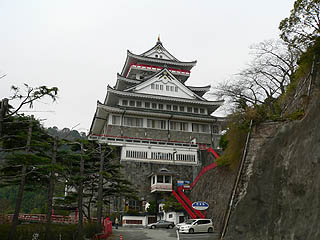
そんなZ級観光地として逆に有名になってしまった感のある熱海城だが、珍寺舎弟としてはもうひとつ見逃せないポイントがある。
それは…
浅野祥雲熱海城鯱制作伝説である。
シャチホコ
数々のコンクリ像を手掛けてきた浅野師だが城の鯱まで作るとは…何でもやっちゃう人だったんすね。
まあ、名古屋在住であった浅野師だけに鯱には並々ならぬ思い入れがあったのかもしれない。
この城への登城には一般的にはロープウェイを使うのだが、車で山道を登って行く場合は城の裏手にある駐車場からアプローチすることになる。
実はその駐車場に凄い方々がいるという話を仕入れて来たのだが…
駐車場のゲートを潜って敷地内に入ってすぐ左右にこんな素敵な方々がお出迎え。
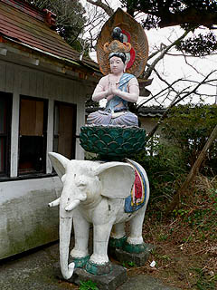 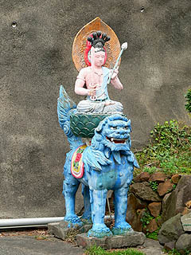
文殊普賢の原発コンビ。
屋外に設置（放置？）されているところからもおわかりの通り立派なコンクリ仏である。
車を停めて近付いてみる。
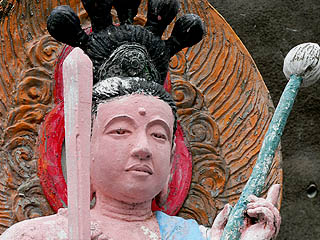 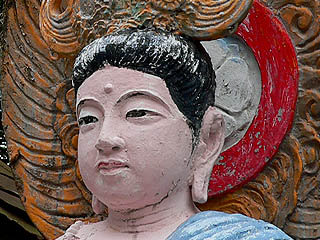
こ、このポンチ一歩半手前のお顔立ち、あなた方はもしや…
浅野祥雲師のお子様方ですね！
浅野作品の実物を見続けてきた者だけに判るそのアンニュイな表情、ドングリ眼、小鼻の下の筋…
紛う事なき浅野祥雲先生の作品であろう。
もちろん他の作品同様銘などは刻まれていないので断言することは控えさせていただくが十中八九、というより95パーセント以上の確率で浅野作品と言っていいかと思う。
あまりにも突然の浅野作品との邂逅に興奮して写真撮ったり目いっぱい近寄ったり小躍りしたりとかなり挙動不審状態な俺。
一般の観光客に見られたら「ママ〜、何かヘンなおじちゃんが泣いてるじょ〜」「マー君、あんな××××と目をあわせたらイケマセン！」てな事態になるので、あわてて平静を装ってその場を後にすべく振り返ったら…
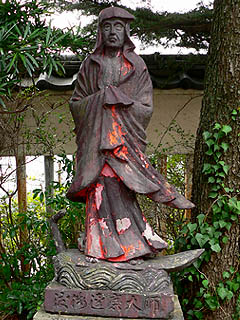
こっちにも居りました！
多分、「波濤達磨大師」と刻まれたコンクリ像。こちらは派手なペイントがされていないタイプ。
こちらも近くで見ると顔の造作が浅野作品っぽい！
関ヶ原ウォーランドにあった戦観音同様、単色で茶塗りのコンクリ像だ。
この後、浅野作品を探訪してみると、それまでは派手にペイントされたコンクリ像というイメージしかなかったが、実はこの単色茶色タイプがとても多い事が判明する。
派手にペイントされたのは浅野作品のごく一部なのだ。
逆に考えれば今まで五色園、桃太郎神社、関ヶ原ウォーランドの派手にペイントされたタイプが強烈過ぎるゆえ、単色タイプの浅野作品が群生する場所はあまり話題にならなかったのではないだろうか。
そんな事を考えつつ歩いていると駐車場の片隅にただならぬ妖気を察知！妖気アンテナがピーン！
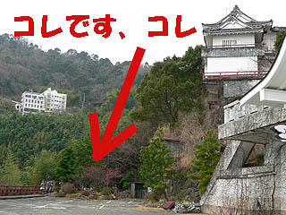
見れば駐車場のホントの片隅に武装したコンクリ像の面々が設置されている。
設置という表現の代わりに放置、廃棄というコトバを用いていただいても一向に差し支えない状態で。
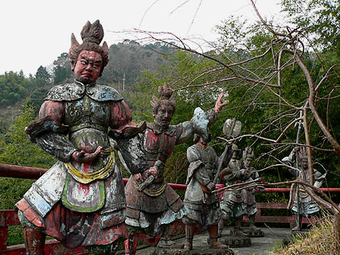
コレまた浅野印の大作といっていいだろう。
十二神将像である（って十一体だったけど）。
↓招杜羅
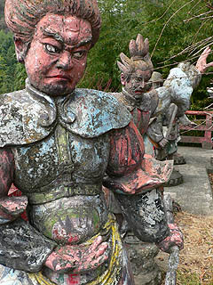
↓毘羯羅 ↓摩虎羅
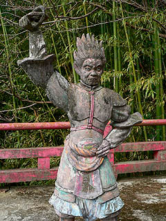 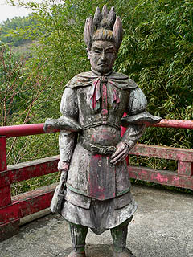
日本で一番有名な新薬師寺の十二神将像をお手本にしている。
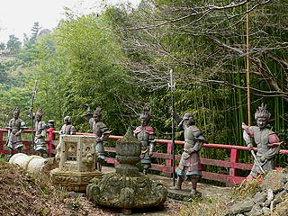
手元にある新薬師寺十二神将の写真と比べると全体のポーズや衣装、持ち物などは結構オリジナルに忠実に作られている。
しかし顔そのものは浅野師のオリジナリティが炸裂。素晴らしい十二神将に仕上がっているじゃあないか。
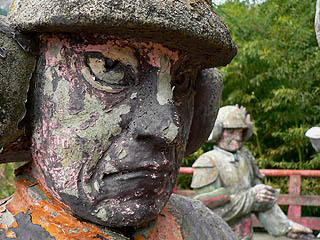 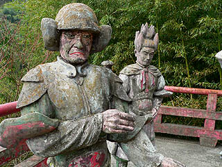
薄く着彩の跡が残っているが、経年により徐々にアースカラーに近づいている御様子。
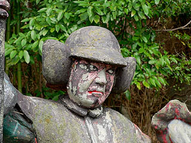
いつ頃制作されたのかは判らないがかなりの年月が経っているはずである。
表面のペンキは薄くなってきたものの破損箇所は少ない。
この辺に「いい仕事してますね〜」っぷりが現れているような気がする。
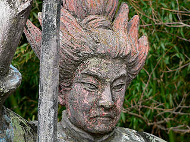 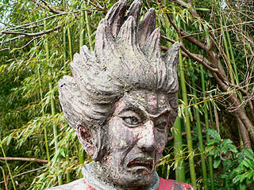
見上げれば熱海城の天守。
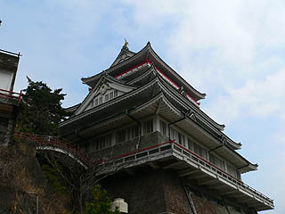
天辺には浅野師が作ったという伝説の鯱が見える。
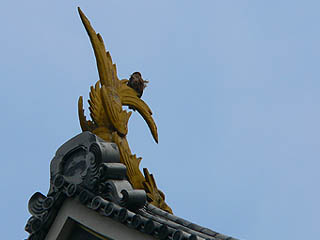
何と日本一大きい鯱だという。
もう、すっかり満足してしまったのでこのまま帰ってもイイのだが、折角だから登城してみるか…
熱海城2へ続く
珍寺大道場 HOME